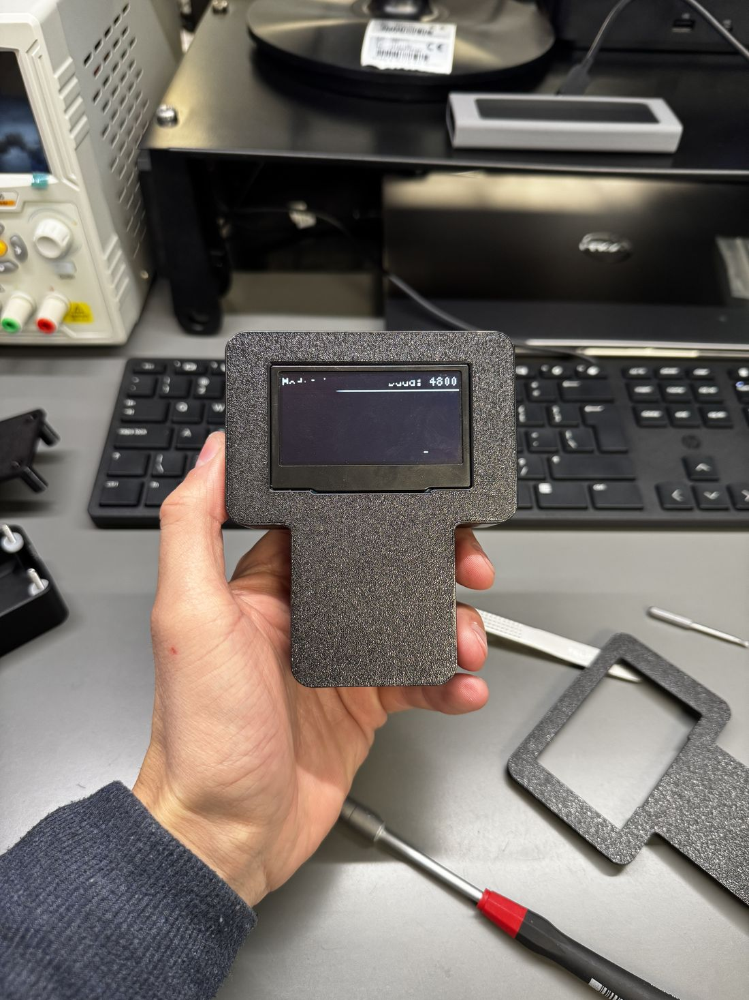
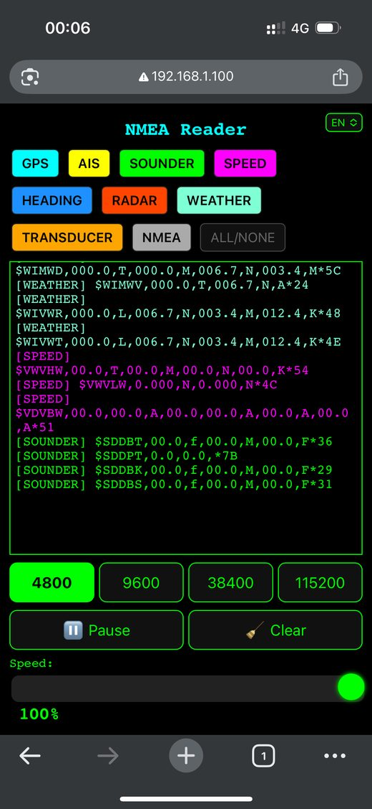
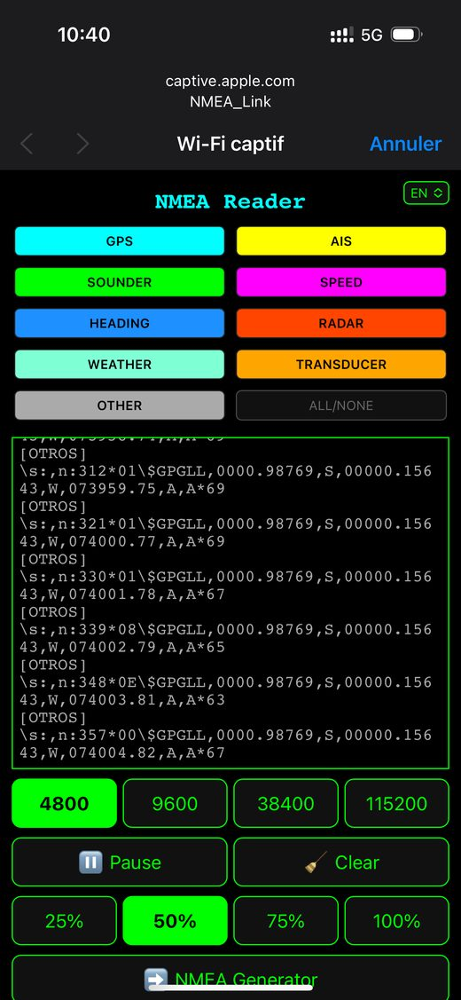
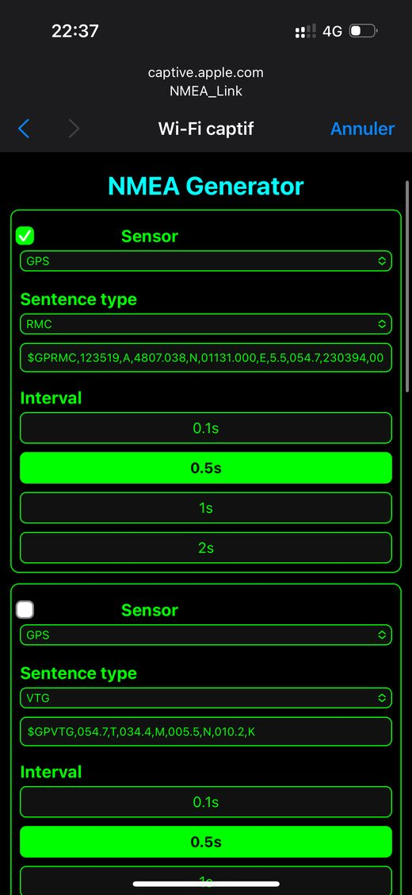
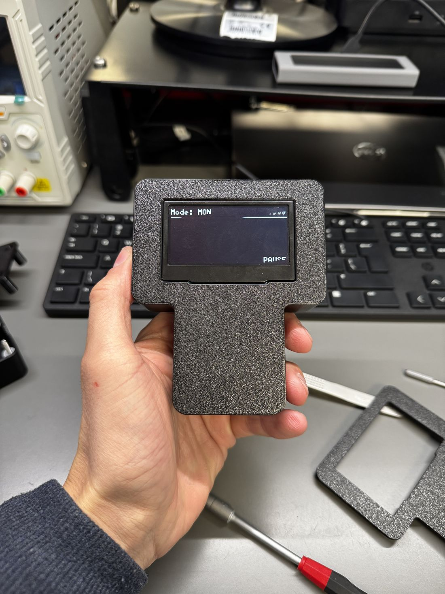
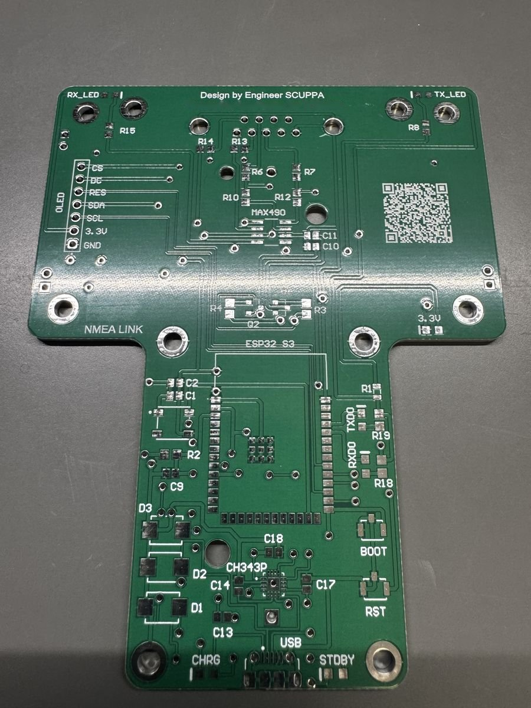
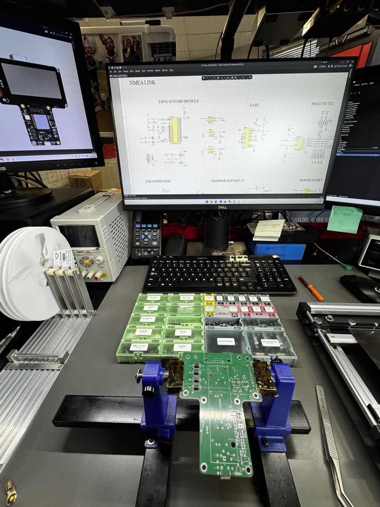
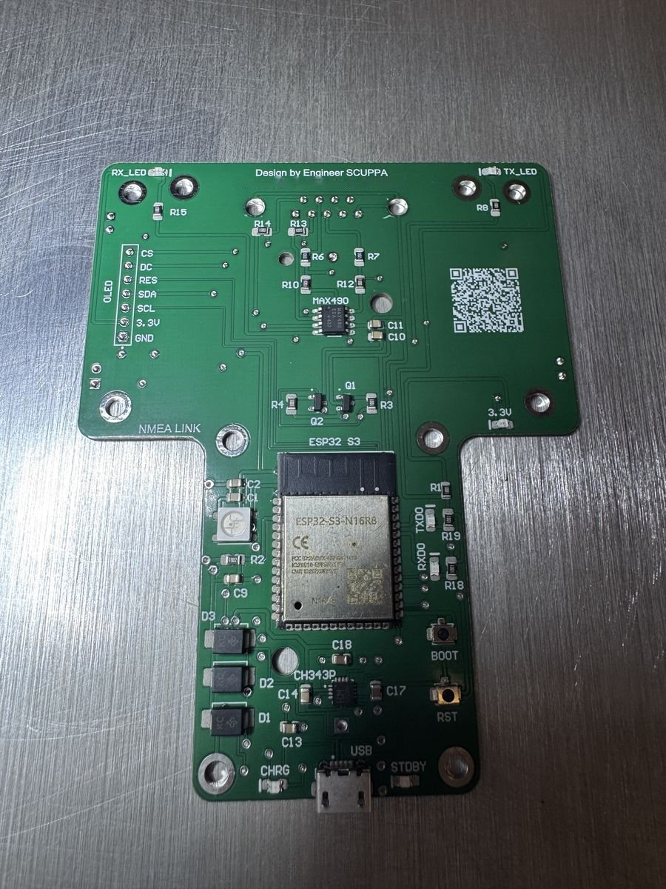
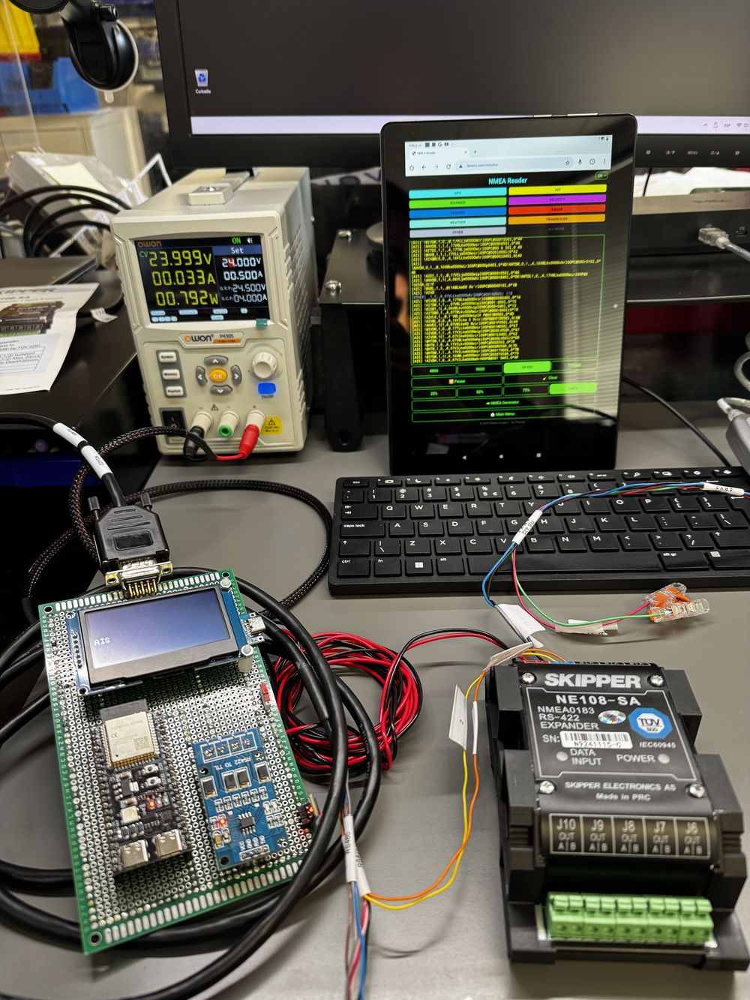
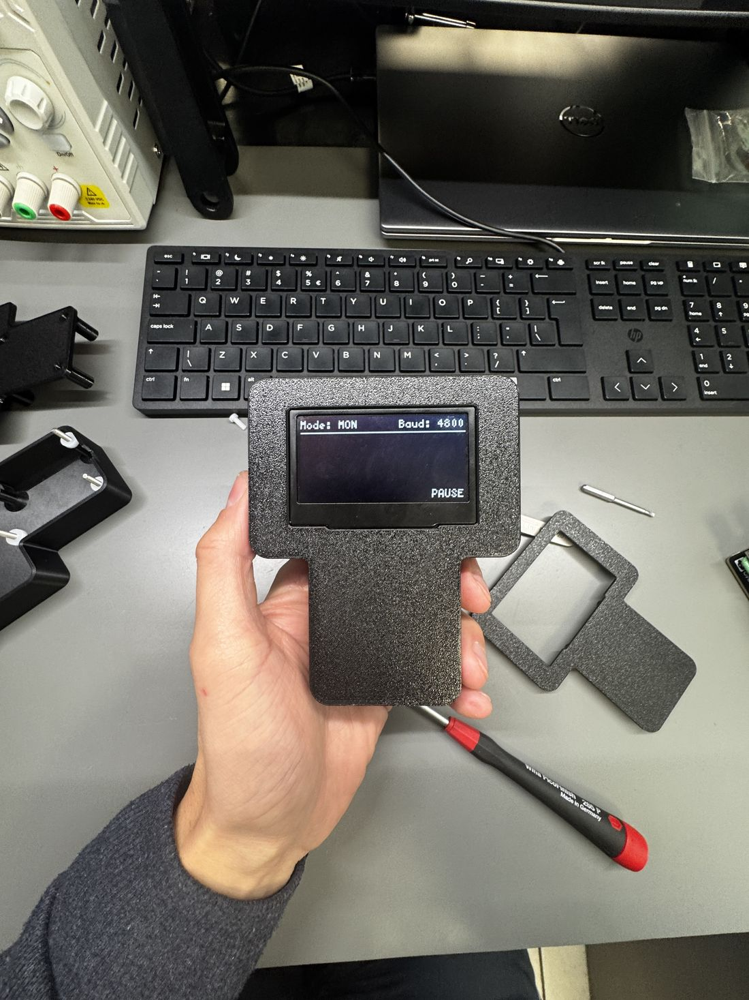

Monitor
Watch the live NMEA 0183 stream and filter it by family — GPS, AIS, sounder, speed, heading, radar, weather, transducer. Pause to read, clear to start fresh, slow the scroll when the bus is busy.
NMEA Link · Portable NMEA 0183 Monitor & Generator
A handheld NMEA 0183 monitor and sentence generator with its own Wi-Fi. Plug it into the bus, open your phone, and watch GPS, AIS, sounder, wind and more live — or simulate the sensors on the bench. No app, no laptop, no cables to the cockpit.

What it does
Whether you are commissioning an installation, chasing a fault, or testing equipment with no boat attached, NMEA Link replaces the laptop, the serial adapter and the terminal software.
Watch the live NMEA 0183 stream and filter it by family — GPS, AIS, sounder, speed, heading, radar, weather, transducer. Pause to read, clear to start fresh, slow the scroll when the bus is busy.
Pick a sensor, choose a sentence type and an interval, and send it. Test a plotter, an AIS display or an autopilot input on the bench without a boat, a sensor or a signal source.
The unit creates its own Wi-Fi network. Join it from your phone and the interface opens by itself — or stream the sentences over UDP to a chartplotter, OpenPlotter or any software you already use.
How it works

Live sentences, grouped by family, with baud rate selection, pause, clear and a speed slider.

Colour-coded filters let you isolate one instrument or look at everything at once.

Choose a sensor, a sentence and an interval, then start sending — ideal for bench testing.
Features
The firmware scans the line and locks onto the baud rate by itself, from 4800 up to 115200. You can still force a rate from the interface.
The RS-422/485 receiver is galvanically isolated, so a ground difference on the boat does not become your problem.
The unit shows its mode, baud rate and status on the front, so you can read it at a glance without opening anything.
Everything runs on the unit — Wi-Fi, interface and generator, powered by its own battery. No internet, no account, no cloud.
Upload new firmware from the browser. Improvements reach your unit without opening the case or connecting a programmer.
An internal rechargeable Li-ion battery makes it fully standalone. Charge it from any USB charger or power bank, and keep working while it charges.
Where it earns its place
NMEA Link comes from real marine electronics work — commissioning and fault-finding on board — not from a lab.
Check that every sensor is talking, at the right baud rate and with valid checksums, before you hand the boat back.
Look at the bus from any spot on board, isolate one instrument with a filter and see exactly what it is — or is not — sending.
Generate the sentences a display, plotter or autopilot expects and test it on the workbench or in the workshop.
Specifications

Under the hood
Every NMEA Link starts as a schematic and a bare board. The hardware, firmware and enclosure are all developed by the same person who uses it on boats.




Support & warranty
You are buying from the people who design, build and maintain NMEA Link — and who stay reachable after the sale.
Open a request any time, day or night, from anywhere in the world. Every request gets a reference number you can follow online until it is resolved.
New features and fixes are delivered as firmware updates, installed over the air from your browser. No programmer, no opening the case, no extra cost.
Every unit is covered for one year against manufacturing and component failures. Damage caused by misuse or accidents — drops, liquid, wrong wiring — is not covered.
Order
Email us how many units you need and your country — we reply personally with availability, shipping cost and how to pay. Shipping is paid by the buyer.

FAQ
No. NMEA Link is a diagnostic and test instrument. It is not designed to replace certified navigation or safety equipment and should not be left installed as a permanent part of a vessel’s navigation system.
No. NMEA Link creates its own Wi-Fi network. Join it and the interface opens in your browser, on a phone, tablet or laptop.
No. Everything runs on the unit itself, so it works on a boat in the middle of nowhere or on a workbench.
4800, 9600, 38400 and 115200. The unit also detects the baud rate automatically.
Yes. The built-in generator lets you choose a sensor, a sentence type and an interval so you can simulate instruments and test equipment.
Yes. The unit streams sentences over UDP on port 10110, which you can pick up in OpenPlotter or any software that reads NMEA over the network.
From the browser interface, with an over-the-air update. You do not need to open the unit or use a programmer.
One year from delivery, against manufacturing and component failures. If your unit fails under normal use we repair or replace it. The warranty does not cover damage caused by misuse or accidents, such as drops, liquid damage or incorrect wiring.
Open a request on the Service & RMA page at any time. You get a reference number straight away and can follow the status of your request online.
Open a request on the Service & RMA page and you will get a reference number you can follow at any time.